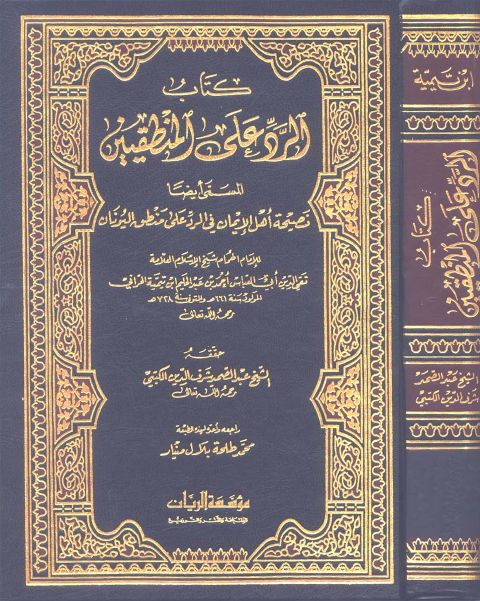

Downloads need an internet connection.
كتاب الرد على المنطقيين المسمى نصيحة أهل الإيمان في الرد على منطق اليونان- ط. الريان
Authors: تقي الدين أحمد بن تيمية الحراني
Editors: عبد الصمد الكتبي محمد طلحة منيار
Publishers: مؤسسة الريان
**▫️ العنوان: كتاب الرد على المنطقيين المسمى نصيحة أهل الإيمان في الرد على منطق اليونان- ط. الريان** ▪️ المؤلف: #تقي_الدين_أحمد_بن_تيمية_الحراني ▫️ المحقق: #عبد_الصمد_الكتبي • #محمد_طلحة_منيار ▪️ الناشر: #مؤسسة_الريان ▫️ تاريخ النشر: 1426هـ 2005م ▪️ بلد النشر: بيروت، #لبنان ▫️ الطبعة: 1 ▪️ عدد الأجزاء: 1 ▫️ الصفحات: 588 ▪️ نوع الوعاء: #كتاب ▫️ التصنيف الرئيسي: #العقيدة_والمذاهب_والأديان ▪️ التصنيف الفرعي: #الفرق_والأديان ۪